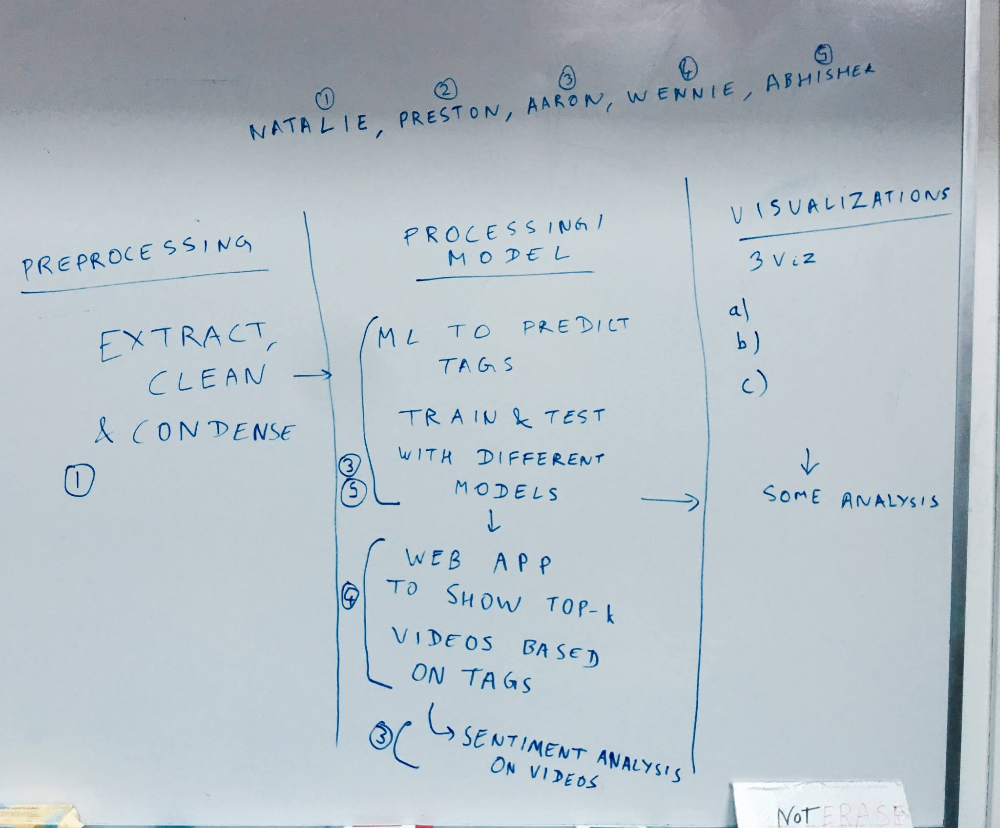
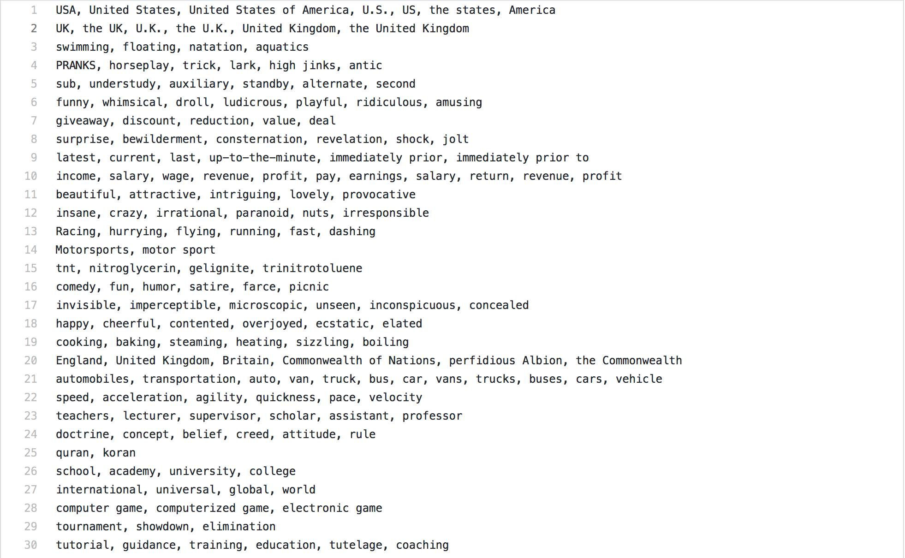
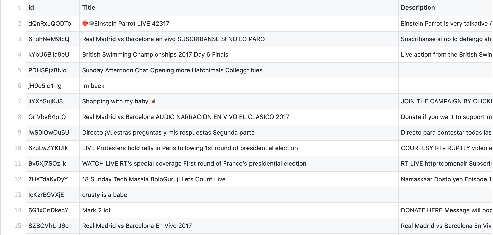
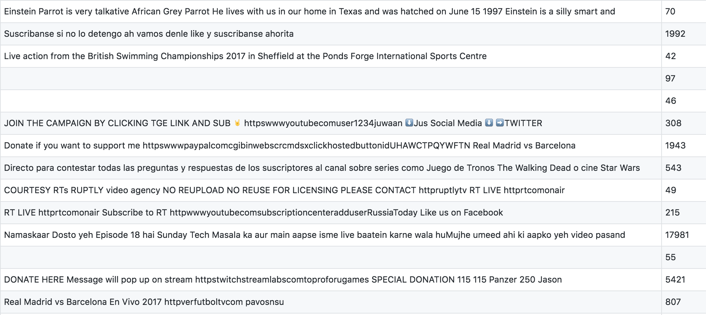
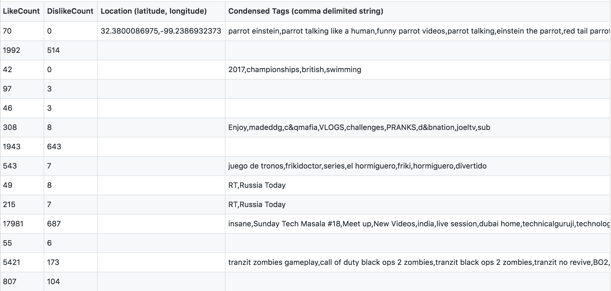
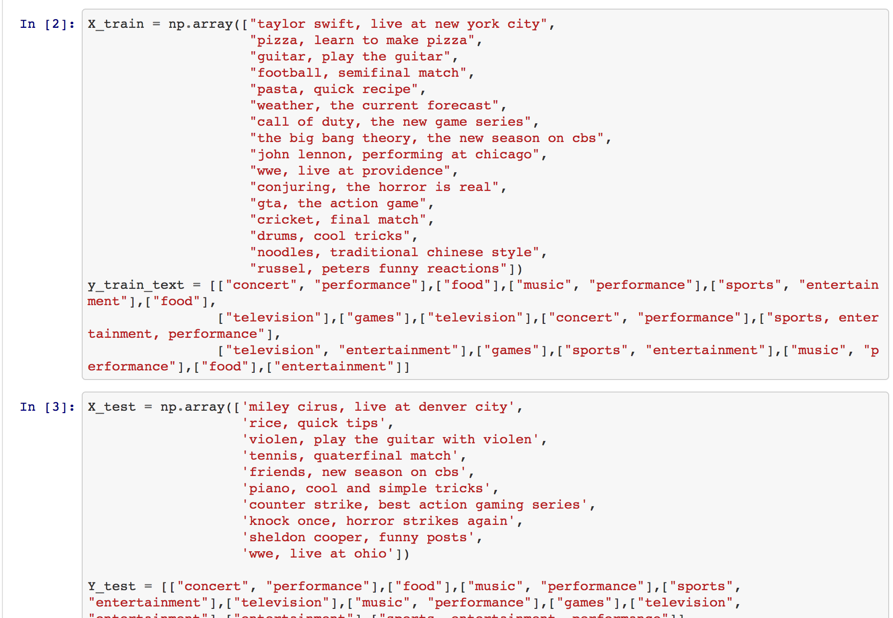
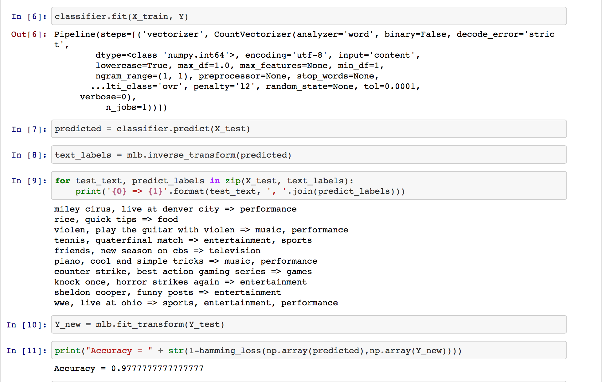

YouTube Recommendation System with Data Trends Analysis using YouTube API
Author: Aaron Wu (pwu8), Abhishek Dutta (adutta2), Natalie Roe (nroe), Preston Law (plaw), Wennie Zhang (yzhang46)
This Week's Work
We have seen good progress this week. In terms of our timeline, we have finished extracting, cleaning, and condensing the data.
We extracted data from the most recently uploaded YouTube videos since March 1, 2017. However, due to limits in the YouTube API, we need more time to extract more data. Nevertheless, the data we extracted includes the Id, Title, Description, LikeCount, DislikeCount, Location, and Tags for each particular video. We will be using the Title, Description, and Tags for our tag prediction. In order to do our tag prediction, we needed to condense the set of tags that we obtained from the YouTube videos. We used the Synonym library from Python to find synonyms between video tags so that we could condense them. Here is a look of our set of tags after condensing synonyms:
We will be training our classifier to identify which tags correspond to which videos. From our set of tags and the data we pulled from YouTube, we have our training and testing data. In the data for our training and testing, we condensed the Tags column from the data we obtained from YouTube to be condensed tags from our list. Below are some images of our final data set:
  This week, we also set up our tag-predictor and sentiment analysis models. However, since we do not yet have all of our data from YouTube due to limitations in the API, we have not ran our models on the data yet. However, we were able to run them on a small set of data that we created to be similar to what the data from YouTube is. Below are some images of our ML on the small set of data we used so far.
 We hope that as we progress the accuracy of our model will continue to be very high.
Challenges
A challenge that we are working on overcoming is dealing with very specific user-defined tags such as “happy parrot” and “sad parrot”. Ideally, we would like to condense both into the tag “parrot”. However, we cannot simply split on the space of the tag or else tags such as “United Kingdom” and “United States” will be split as well when they should not be. Ideally, we would like to be able to find a better way to deal with the types of specific tags we mentioned above, but if we cannot find a method that will preserve the accuracy of our model, we may just leave the tags as is.
Another challenge is dealing with YouTube videos with tags in another language. We are considering either completely removing them from our dataset, or including them anyway in our ML analysis. We are currently coming up with ways to manage these types of videos, but they do not comprise a large proportion of our dataset so this is not too big of an issue to resolve.
Goals for Upcoming Week
Our goals moving forward are to start on the three visualizations we outline in the final proposal so that we can get those done in time for the poster printing deadline (May 2). We will also be finalizing our web application so that we can host it on this project website.
Home Page # is: here .